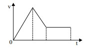
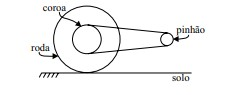
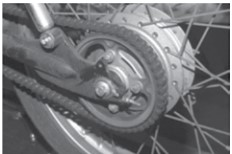
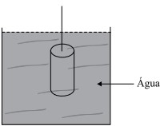

1. O gráfico qualitativo da velocidade (v), em função do tempo (t), da figura a seguir representa o movimento de um carro que se desloca em linha reta.
Considerando que sua posição inicial era o marco zero da trajetória, o correspondente gráfico horário de sua posição (S), em função do tempo (t), é
2. A polia dentada do motor de uma motocicleta em movimento, também chamada de pinhão, gira com frequência de 3600 rpm. Ela tem um diâmetro de 4 cm e nela está acoplada uma corrente que transmite esse giro para a coroa, solidária com a roda traseira. O diâmetro da coroa é de 24 cm e o diâmetro externo da roda, incluindo o pneu, é de 50 cm. A figura a seguir ilustra as partes citadas.
Use π = 3, considere que a moto não derrapa e que a transmissão do movimento de rotação seja integralmente dirigida ao seu deslocamento linear
A velocidade da moto, em relação ao solo e em km/h, é de
3. Ao ser expelido do cano de 50 cm de comprimento de uma arma em repouso relativamente ao solo, um projétil leva 0,10 s para percorrer, em linha reta e com velocidade constante, a distância de 100 m. Supondo que a massa do projétil seja de 25 g e que seu movimento no interior do cano seja realizado com aceleração constante, a intensidade da força propulsora resultante sobre ele no interior do cano deve ser, em newtons, de
4. Em um trecho curvilíneo de uma rodovia horizontal, o R A U motorista de determinado veículo, dirigindo em velocidade excessiva, perdeu o controle da direção e, atravessando a pista, caiu na vala que havia além do acostamento. Chovia muito naquele momento e várias hipóteses foram levantadas para explicar o fato. Em relação a um referencial inercial, assinale a alternativa que apresenta a hipótese correta.
5. Um projétil, de massa m = 10 g, feito de metal de calor específico c = 0,10 cal/(g.ºC), atinge um colete à prova de bala com velocidade v = 600 m/s, parando antes de atravessá-lo. O equivalente mecânico do calor é admitido com o valor 4,2 J/cal e o colete é tido como adiabático. A quantidade de calor dissipada integralmente no projétil deve elevar a temperatura dele, em ºC, de aproximadamente
6. Dois chuveiros elétricos apresentam as seguintes especificações:
chuveiro A – 5 600 W-240 V; chuveiro B – 2 800 W-120 V.
Sabendo que seus resistores ôhmicos e cilíndricos são feitos do mesmo material e têm o mesmo comprimento, a razão entre suas áreas de secção transversal, SA/SB, vale
7. “Princípio (...) que se reveste de autoaplicabilidade, não é – enquanto postulado fundamental de nossa ordem político-jurídica – suscetível de regulamentação ou de complementação normativa. Esse princípio – cuja observância vincula, incondicionalmente, todas as manifestações do Poder Público – deve ser considerado, em sua precípua função de obstar discriminações e de extinguir privilégios (...)”
(STF – MI n. 58-DF – Pleno – Rel. Min. Celso de Mello)
O excerto de julgado acima reproduzido trata de um princípio intimamente relacionado com os direitos humanos e que é explicitamente protegido em nossa Constituição Federal, denominado expressamente de princípio da
8. Em determinadas investigações, o uso de aparelhos emissores de ondas eletromagnéticas torna-se imprescindível. Considere uma sequência de frentes de ondas planas deslocando-se no ar e incidindo sobre um grande cubo de vidro maciço formando um ângulo α com a face de incidência, como mostra a figura.
9. Ao percorrer uma curva horizontal, em forma de quarto de circunferência, com velocidade escalar constante, um veículo sofre, relativamente a um referencial inercial, uma força resultante centrípeta de
10. A figura ilustra a roda traseira de uma motocicleta.
coroa de transmissão
(http:∕∕fdr.com.br∕form...)
Considerando-a em movimento e com a coroa girando solidariamente com a roda, é correto afirmar que, em um mesmo intervalo de tempo e relativamente ao eixo comum de ambas,
11. No campo de provas de uma montadora de automóveis há uma pista horizontal e retilínea. Durante a realização de um teste, um de seus veículos, de massa total 1 200 kg, incluindo a do motorista, parte do repouso e atinge a velocidade de 144 km∕h ao fim de um percurso de 400 m. Se o movimento do veículo é realizado com aceleração constante, a força resultante sobre ele tem intensidade, em newtons, de
12. No interior de São Paulo ocorre uma tragédia familiar. Um garoto de 26 kg de massa cai em queda livre do 14.º andar de um prédio, projetando-se no solo de uma altura de 42 m. No impacto com o solo, toda a energia cinética é convertida em energia térmica para aquecimento do corpo do garoto em 2 o C. A aceleração da gravidade local tem o valor 10 m∕s2 e o equivalente mecânico do calor é de 4,2 J/cal. A capacidade térmica do corpo do garoto, em cal/o C, deve ser de
13. Ao investigar determinado crime, um perito precisava determinar o comportamento do som proveniente do estampido de uma arma usada nesse crime. Para tanto, o perito raciocinou corretamente que, ao atravessar uma janela de vidro, em relação ao seu comportamento no ar, as ondas sonoras
14.Duas lâmpadas idênticas, de especificações 15 W – 220 V cada, são ligadas em paralelo a uma rede elétrica alimentada por uma fonte de tensão de 220 V. A intensidade da corrente elétrica através de cada lâmpada será, em ampéres, mais próxima de
15.Um cilindro de ferro, de altura considerável, é mantido penso por um fio na posição vertical, totalmente submerso em um tanque cheio de água, como mostra a figura
Nessas condições, é correto afirmar que
16.No intuito de observar o comportamento de certa massa de gás ideal, confinada em um frasco cilíndrico dotado de uma base móvel, um investigador diminui isotermicamente seu volume. O gráfico qualitativo da pressão (p) que esse gás exerce sobre as paredes do recipiente, em função do volume (V) por ele ocupado está melhor representado em